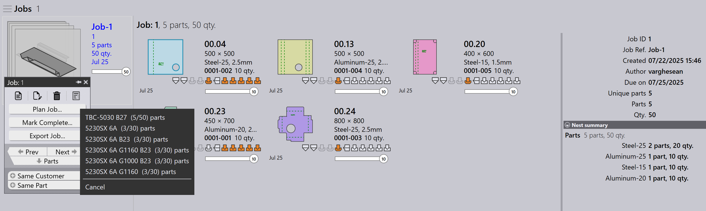
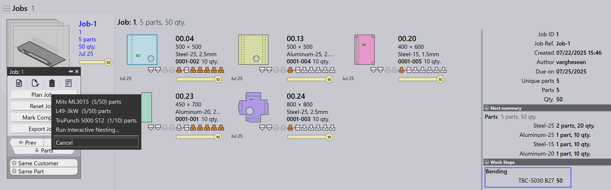
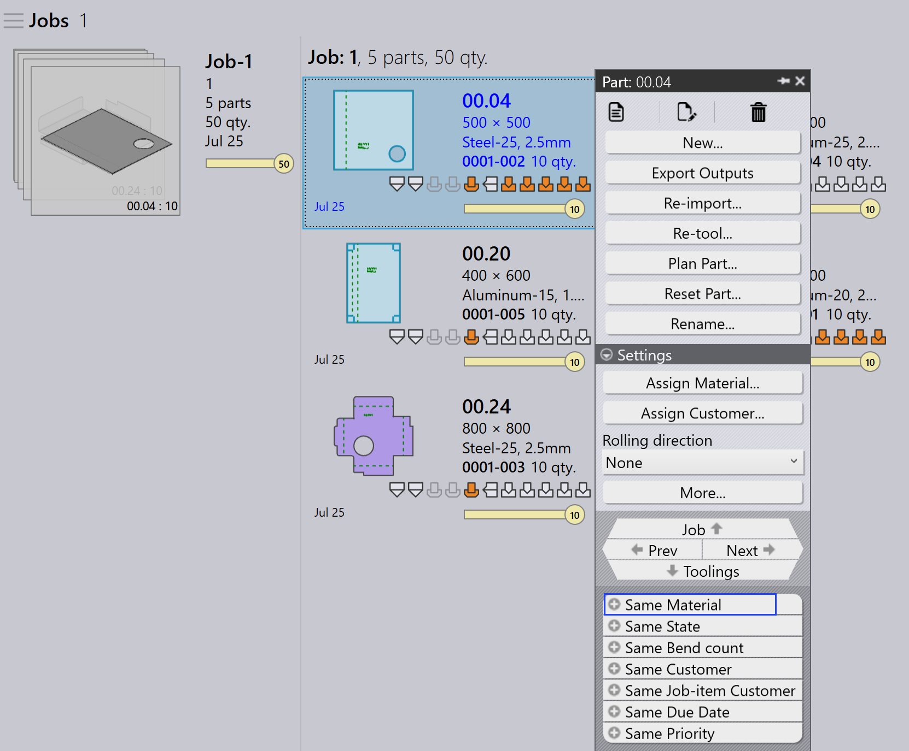

Planificación automática
Auto Plan automatiza el proceso de planificación de las operaciones de plegado y corte. Ayuda a optimizar el uso de las máquinas, reducir el desperdicio de material y gestionar las prioridades de las tareas de forma eficiente.
El flujo de trabajo general consiste en planificar primero las piezas para las máquinas de plegado y luego planificar las piezas para las máquinas de corte.
Plan de plegado
Un Bend Plan define cómo se distribuyen las piezas entre las máquinas de plegado disponibles.
Ejemplo: Bend Plan para 5 piezas (10 unidades cada una).
-
Haga clic en la opción Plan Job….
-
5 piezas (50 unidades) se asignan a TBC-5030 B27
-
Después de la planificación, el estado de la tarea se actualiza a Bend Planned para un total de 50 unidades. Los pasos de trabajo se actualizan con las máquinas de plegado asignadas y las cantidades de piezas.


Plan de corte - anidamiento
Después del plan de plegado, el plan de corte se crea anidando las piezas en máquinas de corte adecuadas. Hay dos formas de anidar:
Planificar tarea para anidamiento - tarea
Utilice Plan Job… para anidar todas las piezas de la tarea juntas. El motor de nesting procesa automáticamente todas las piezas según la prioridad de la tarea, la fecha de vencimiento y el material. Esto es ideal cuando desea que toda la tarea se anide y se envíe a la cola de corte de una sola vez.
-
Haga clic en Plan Job… y seleccione cualquier máquina.
-
El motor Pmonitor inicia la tarea de nesting.
-
El motor divide la tarea según sea necesario para maximizar el uso de la chapa.
| No es posible anidar asignando materiales específicos a máquinas específicas. Por ejemplo, no puede anidar Material1 en Machine1 y Material2 en Machine2 en la misma operación. |
Planificar pieza para anidamiento - pedido
Utilice Plan Part para el nesting a nivel de pedido, es decir, anidar solo piezas seleccionadas de la tarea. Normalmente, haga clic con el botón derecho en una pieza y elija Same Material, de modo que solo se agrupen y aniden juntas las piezas del mismo material.
Esto es útil cuando desea controlar qué piezas se anidan; por ejemplo, piezas del mismo material o de un lote específico.

-
En la página Job Detail, haga clic con el botón derecho en cualquier pieza y seleccione Same Material. Se seleccionan todas las piezas del mismo material.
-
Haga clic en Plan Part… y seleccione una máquina para el nesting.
-
El motor procesa solo las piezas seleccionadas y crea los nestings.